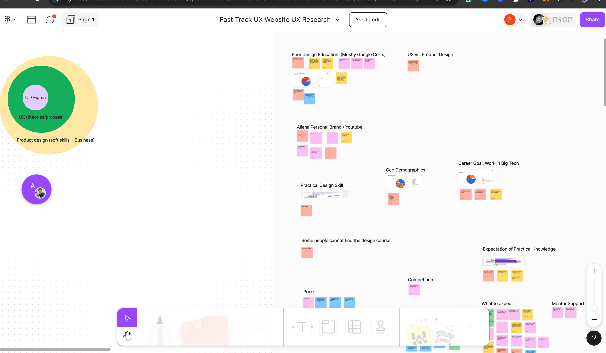
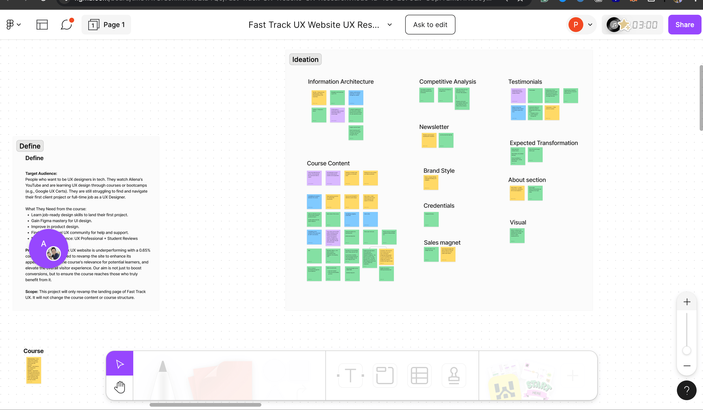
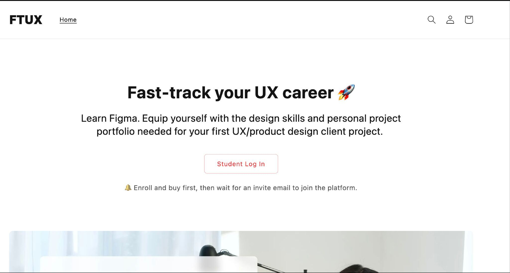
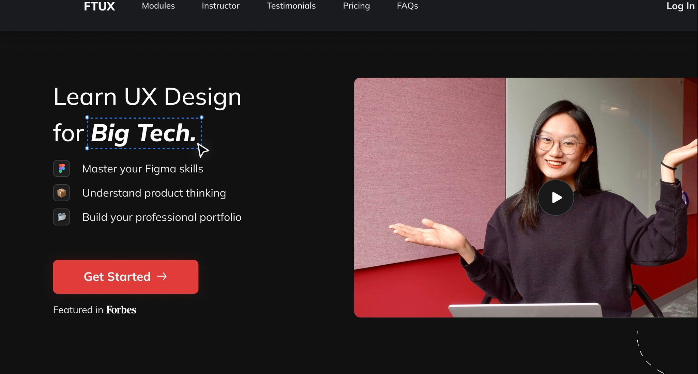
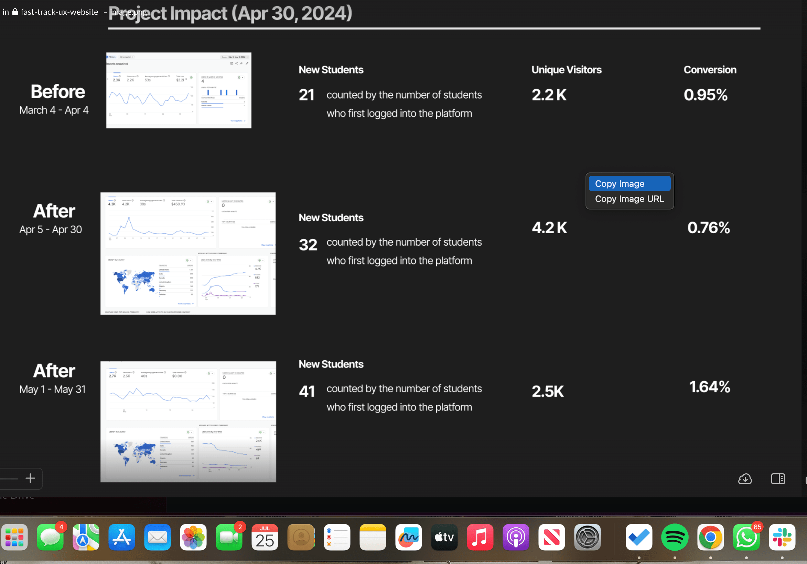

Optimizing Conversion: Content Design for Ed-tech Website
FastTrackUX teaches product and UX design through recorded lessons, for complete beginners and working professionals alike. The existing landing page read as personal, closer to an individual's portfolio than a business, and it did not reflect the platform's actual authority. It was not converting.
The harder constraint sat underneath that surface complaint: the page had to speak to two distinct audiences in one voice, without oversimplifying for one group or losing the other in jargon.
Research confirmed both problems at once. Ten percent of visitors were not sure if they were looking at a business or someone's personal project. Twenty-nine percent said the copy was missing the exact keywords that would have prompted them to explore further. The page was not just unclear. It was speaking to no one in particular.
Fixing a landing page that speaks to no one starts with finding out who it needs to speak to, and in what words. That meant treating the audience split as a research question before it became a copy problem.
User interviews and surveys, run alongside the design team and analyzed in Lyssna, replaced assumption with evidence before a single word changed. Affinity and empathy maps, plus a keyword pass in FigJam, surfaced the precise words students used to describe their goals and frustrations, not the words the platform had been using to describe itself. That research produced three decisions that shaped everything downstream.

Research synthesis board

Site mapping for the redesign
Research Before Rewriting
User interviews and surveys replaced assumption with evidence before a single word changed.
Mine the Exact Language Users Used
Affinity and empathy maps, plus a keyword pass in FigJam, surfaced the precise words students used to describe their goals and frustrations.
Ship Raw, Then Refine With Data
Microcopy went out true to research first, then moved through A/B testing rounds with a live feedback loop.
Those three decisions came together most visibly in the hero section, the first thing any visitor sees and the place the research findings landed hardest. The rebuilt hero used the keywords users had asked for, cut the sentence clusters that had confused them, and centered one title bridging both audiences around a shared goal: "UX Design in Big Tech." The CTA invited exploration instead of forcing a checkout-page decision.

Before

After
As a designer myself, I am extremely impressed by how much Precious knows about UX design. Her thorough understanding of UX theories and methodologies allowed us to collaborate seamlessly and make great design decisions quickly.
Aliena Cai, CEO at Aliena LLC · FastTrackUXThe redesign shipped, and the numbers leading this page are what followed: student logins nearly doubled, unique visitors nearly doubled, and for the first time, one page was doing the job of two.
- One headline serving two distinct audiences

When a product serves two audiences, the fix is rarely two versions of the copy. It is finding the one true thing both audiences already want and building the page around it.
Have a conversion problem that needs a content-first fix?
I'd love to hear about your team and where content strategy could help.
Let's work together →